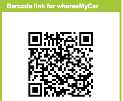
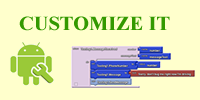

Android, Where's My Car
Download Book Chapter
You parked somewhere near the stadium or bar, but when the concert/party ends you don't have a clue where the car is. The friends you came with are equally as clueless.
Fortunately you haven't lost your Android phone that never forgets anything, and you remember you have the hot new app, Android, Where's My Car? . With this app, you click a button when you park your car, and the Android uses its location sensor to record the car's GPS coordinates and address. Later, when you reopen the app, it shows you a map from where you are to the remembered location-- problem solved!
Photo licensed under Creative Commons
Download it, Customize it, Understand it
Below is a customizable, annotated and explained Android, Where's My Car? app. You can:
- install the app on your phone by scanning a barcode
- download the source code blocks for the app, upload them into App Inventor, then customize the app or use it as the basis for another idea you have.
- Study the annotated blocks and explanations below to better understand the app and App Inventor programming in general.
Try It
|
Scan the barcode to your Android phone. It will step you through installing the app. (If you don't have a scanner, download the free ZXing scanner by searching for it at the Android Market) |
 |
Customize It
Download the source code blocks to create your own customized app.
|
 |
Understand It
The app demonstrates how to communicate with the Android location sensor, how to record data in the phone's long-term memory (database), and how you can open the Google Maps app from your app to show directions from one one location to another. It makes use of the following App Inventor components:
- Location Sensor
- TinyDB -- to store the data
-
ActivityStarter
-- to open a map
The User Interface
Here are the components for the Android, Where's My Car? app, as shown in the Component Designer:

The user interface consists of labels to show location data and buttons to initiate events. Some labels just show static text, e.g., GPSLabel is the text "GPS:" that appears in the user interface. Others, such as CurrentLatLabel , will display dynamic data one the location sensor gets its readings. For these labels, a default value is set (0.0) here in the Component Designer.
The ActivityStarter1 component is used to launch the map when the user asks for directions. Its properties are only partially shown above. Here is how they should be specified:
| Property | Value |
| Action | android.intent.action.VIEW |
| ActivityPackage | com.google.android.apps.maps |
| ActivityClass | com.google.android.maps.MapsActivity |
The App's Behavior
Here are the blocks for the Android, Where's My Car? app (the yellow annotations will also appear when you load this app into App Inventor):

Let's examine the four different event-handlers of the app, starting in the top-left and working around in counter-clockwise order.
LocationSensor1.LocationChanged . This event occurs when the phone's location sensor first gets a reading, or when the phone is moved to produce a new reading, The event-handler just places the readings--latitude, longitude, and current (street) address-- into the corresponding "Current" labels so that they appear on the phone.The RememberButton is also enabled in this event-handler. Its enabled setting should be unchecked in the Component Designer because there is nothing for the user to remember until the sensor gets a reading.
RememberButton.Click. When the user clicks the RememberButton , the location sensor's current readings are put into the "remember" labels and stored to the database as well. The DirectionsButton is enabled as it now makes sense for the user click on it to see a map (though it will make more sense once the user changes location).
DirectionsButton.Click. When the user clicks the DirectionsButton , the event-handler builds a URL for a map and calls ActivityStarter to launch the Maps application and load the map. make text is used to build the URL to send to the Maps application. The resulting URL consists of the Maps domain along with two crucial parameters, saddr and daddr , which specify the start and destination for the directions. For this app, the saddr is set to the latitude and longitude of the current location, and the daddr is set to the latitude and longitudeo of the location that was "remembered" (the location of your car!).
Screen1.Initialize . This event is always triggered when an app opens. To understand it, you have to envision the user recording the location of the car, then closing the app, then later re-opening the app. When the app re-opens, the user expects that the location remembered earlier should appear on the phone. To facilitate this, the event-handler queries the database ( TinyDB.GetValue ). If there is indeed a remembered address stored in the database-- the length of the stored address is greater than zero--the remembered latitude, longitude, and street addres are placed in the corresponding labels.
Variations
- Create "Android, Where is Everyone?", an app that lets a group of people track each other's whereabouts. Whether your hiking or at the park, this app could help save time and even lives.
- Create a "breadcrumb" app that tracks your (phone's) whereabouts by recording each location change. One interesting refinement would be to only record a new "breadcrumb" if the location has changed by a certain amount.
Review
Here are some of the ideas covered in this tutorial:
- The LocationSensor component can report the phone's latitude, longitude, and current street address. Its LocationChanged event is triggered when sensor gets its first reading and when the reading changes (the phone has moved).
- The ActivityStarter component can launch any app including Google Maps. For Maps, you set the DataUri property to the URL of the map you want to display. If you want to show directions, the URL will be of the form: http://maps.google.com/maps/?saddr=0.1,0.1&daddr=0.2,0.2, where the numbers are GPS coordinates.
- make text is used to piece together (concatenate) separate text items into a single text object. It allows you to concatenate dynamic data with static text. With the Maps URL, the GPS coordinates are the dynamic data.
-
TinyDB
allows you to store data persistently in
the phone's database. Whereas the data in a variable or property is lost when an
app closes, the data you store in the database can be loaded into your app each
time it is opened.
Google is grateful to Professor David Wolber , CS Professor at The University of San Francisco, for developing this tutorial.